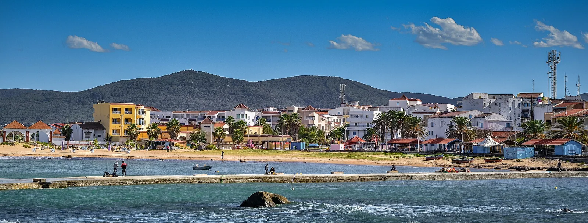

Tabarka
Jendouba, Tunisie · plongée, snorkeling

Port du nord-ouest tunisien, près de la frontière algérienne, réputé pour ses fonds rocheux riches en corail rouge et en mérous. Les sorties de plongée partent du port de plaisance, au pied du fort génois.
- Lieu
- Jendouba, Tunisie
- Niveau
- Variable selon les conditions
- Activités
- plongée, snorkeling
- Type d'eau
- Mer / océan
- Coordonnées
- 36.96, 8.76 (position approximative du secteur)
Dangers à connaître
- Mer vite formée par vent de nord-ouest.
- Trafic de bateaux de pêche autour du port.
Le conseil d'Ocean Buddy
Plonge avec un centre local et demande des sites adaptés à ton niveau : certains tombants sont profonds.
Ouvrir dans Ocean Buddy Télécharger sur l'App Store
Source : Fiche Ocean Buddy · septembre 2026 · à vérifier localement.